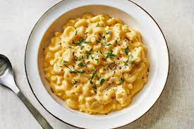

Macaroni and cheese Recipes

Description
Quick, easy, and tasty macaroni and cheese dish.
Fancy, designer mac and cheese often costs forty or
fifty dollars to prepare when you have so many exotic
and expensive cheeses, but they aren't always the best
tasting.
This simple recipe is cheap and tasty.
Ingredients
- 1 (8 ounce) box elbow macaroni
- ¼ cup butter
- ¼ cup all-purpose flour
- ½ teaspoon salt
- ground black pepper to taste
- 2 cups milk
- 2 cups shredded Cheddar cheese
Steps
- Bring a pot of water to a boil. Cook elbow macaroni until al dente, about 8 minutes..
- While the macaroni is cooking, go ahead and start on the roux. A roux is a thickening agent made of one part fat and one part flour that makes up the base of this creamy mac and cheese.
To make the roux, start by melting butter in a saucepan over medium heat. Add flour, salt, and pepper and stir until smooth. Slowly pour in milk and stir until the mixture is smooth and bubbling.
Be careful to not let the milk burn.
- Add Cheese and Macaroni
- Enjoy!